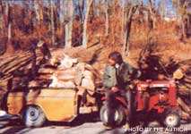

Marion, my husband, needed a cart of some sort ... something sturdy that he could attach to his garden tractor and haul logs, firewood, and other heavy loads on. But every cart built as husky as he wanted ... also carried a heftier price than he wanted to pay.
And then one day he saw a wrecked Subaru on the Datsun lot where he works, and Marion knew he'd found just what he needed. A couple of his buddies helped him cut the back end out of the automobile, add a tongue, and-in general-convert the rear portion of the car into the trailer you see here.
Nope, it ain't much to look at ... but our "new" cart has already hauled many tons of wood for us. We live on six acres, mostly wooded, near the edge of town and our son (Michael, the handsome guy in the photo) fells only dead trees ... which he then saws into fuel for our fireplaces. And the whole job-or at least the part about getting that firewood to the house-is a great deal easier ... thanks to an old Subaru.
|
 |
|
|